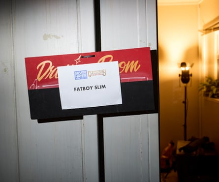
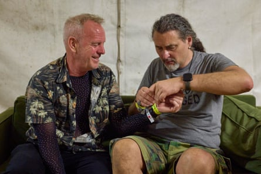

Irreverent, bouncy and as suitable at 4am in a club as it is at 4pm in a field, the music of Fatboy Slim dovetails perfectly with Glastonbury. And the man himself, Norman Cook, seems to know it.
This year’s festival marked a big milestone: Cook has now played 100 Glasto sets – or thereabouts – over the years, popping up everywhere from vast stages to tiny tents. To document the occasion, Guardian photographer David Levene bedded in with the DJ for the weekend, while Cook explained why it holds such a special significance for him.
Cook tries to find his daughter for Burning Spear at the Pyramid Stage
Bumping into Chris Moyles, and right, having his photo taken with Charley and her son Remi, 7 months, from Somerset
Cook checks out the scenes outside Lonely Hearts Club stage in Silver Hayes, where he’s due to play that evening at 10.30pm

Feeling it at his son Woody’s DJ set at Scissors Bar
Cook’s dressing room at Lonely Hearts
“We’re not doing a kind of 100th show extravaganza on the grounds that we don’t actually really know which would be the 100th. It’s not an exact science, it’s a guesstimate. Thing is, I play so many shows, and so many of them are just like impromptu that we really don’t know. So I think it’d be a bit much to really get the bells and whistles out. We think it’s the Block9 show in the afternoon tomorrow – we think! But no candles, sadly.
“I’m very, very proud of my relationship with Glastonbury and my history with it and I’m lucky, because as a DJ, you can play multiple sets. Obviously, there’s probably people who’ve been to more Glastonburys, but they’ve only played one show per festival – that’s not going to get you into big high figures.”
Fire it up! Fatboy Slim at Lonely Hearts Club
“My first Glasto show was on the Pyramid stage in 1986 with the Housemartins, and we didn’t know anything really about Glastonbury or festivals. We’d never played in daylight before – we only ever played in clubs – and also we thought that Glastonbury was full of bearded hippies who would probably throw mud and bottles of piss out at us. So we went on quite nervous and quite agitated, but that was quite good in the Housemartins, channelling that aggression – we had the nice tunes, but there was a lot of aggression. We made an awful lot of friends, and it changed our view about Glastonbury. The only weird thing was me and Paul [Heaton] have both had fairly successful careers, but neither of us had managed to get back on the Pyramid stage for 38 years. Last year, Paul played the Pyramid stage and he phoned me up and said, ‘Will you come on and do a song with us , just to celebrate?’”
Fatboy Slim prepares before performing at Lonely Hearts Club stage

Dropping bangers at Lonely Hearts Club, with Stella McCartney backstage
“My favourite Glastonbury moment was playing for [Rob da Bank’s label] Sunday Best. I was four days in at that point, my mind had been expanded, altered and distorted, as was everybody’s around me. So I decided if I played a record backwards, would people dance backwards? And it was a good theory. Obviously with CDJs, you can press reverse, but with the record, you have to physically rewind it. So I played Block Rockin’ Beats, by the Chemical Brothers, pretty much at the right speed but backwards. And it worked. Everybody got the joke. It was just after Twin Peaks too, so everybody was like, dancing backwards to the music. What I forgot was that Ed from the Chemical Brothers was in the DJ booth with me, and he went, ‘What are you doing?’ I’m like, ‘I want to see if they can dance backwards.’ He’s like, ‘Oh, great!’ That’s probably the most out there I’ve ever been.”
Fatboy Slim performs at Lonely Hearts Club stage at Silver Hayes
“I loved the Rabbit Hole. It was never the same [after it closed]. Absolutely anything could happen, and sometimes it did. I much prefer the smaller stages to the big ones, but having said that, when we did the Park the other year, that felt pretty much like the perfect gig. We brought Rita Ora on – I don’t normally do showbiz-y things like that. It’s probably my favourite set.”
Another set, this time at the Genosys stage
Tweaking the faders at Genosys
“My son Woody is playing here this year, and it’s just fabulous. My daughter’s here, my ex wife [Zoe Ball] is here. We’re all hanging out. It’s beautiful. Woody came to Glastonbury when he was about eight, and it didn’t go well for him or for me and Zoe. But when he started coming under his own steam, it’s weird, because we didn’t teach him anything, he just assimilated himself into the fabric of it and made all these friends the first year he went. He was built for Glastonbury: he’s just got that energy, he wants to talk to everybody, he wants to change the world. Everybody keeps telling me how cool my son is or how mental my son is, sometimes both.”
The crowd at Genosys, Block9
“As a festival, Glastonbury never sold out to the man. The Eavis family have kept it independent, which means they’re in charge of the way it feels and the way it looks, and people respect that. There’s nothing corporate that interferes and dictates, you know, and it’s not about making money. The music business, especially when money comes in, it distorts your creative ideas and the feel of it and it becomes a money-making machine. But the Eavis family never sold out. They don’t do it for money. They do it because they love watching this going on on their farm every year.”
Next up: Shangri-La
Having his stage wristband put on before performing at Shangri-La, by his video director Bob
“I genuinely love this place so much. I feel proud if I’m promoting the Glastonbury brand, or just being part of the furniture or just wandering around saying hello to everyone. Michael Eavis can’t get around so much any more, but I was always so impressed about the fact that he would just spend the whole festival wandering, saying hello to everyone.”
Cook bids farewell to the festival for another year at Shangri-La